Desktop Bo
A desktop pet starring Julia's real cats, Bo and Bunny, and her mother's dog, Juno. Rendered the way PF Magic rendered Catz (1996); painted the way RollerCoaster Tycoon painted parks. Three places, no objectives, no fail states for the player.
How to read this: §1 is the pitch and the experience goals. §2 is the ontology, the fixed vocabulary every later section uses. §3–§7 define the game as classes of thing and the rules between them. §8–§9 are presentation and engineering. §10–§11 are production: process, status, history, recipes. Appendices hold the machine-readable specs. Values marked live are read from the engine as this page loads; everything else is transcribed from source and names its file.
1Overview
1.1Concept
A virtual-pet simulation in which the pets are specific, real animals and the furniture, plants and garden are their owner's. The cats live by their own state machines on the real clock; the player is the hand that pets, carries, feeds, plants and puts things out. The target feeling is recognition: the owner looks at it and says "that's so Bo."
- Genre
- Desktop pet / ambient life simulation (lineage: Catz, Dogz, Tamagotchi without the meters, Neko)
- Platforms
- macOS (Electron app, habitat window + roam over the desktop); browser (one published page; phone layout with camera); the embed in §1.6
- Session shape
- Always on. Minutes of attention, hours of background. Nothing is lost by leaving.
- Players
- Julia; her mother (a touch-first "Mom mode" is open, §10.4); anyone with the browser link
- Content scale
- 2 cats + 5 adoptable coats, 1 dog, 13 bird kinds + squirrel + pigeon + butterflies, 52 placeable things, 3 places, 36 cat states, 8 seeds
1.2Experience goals
What the player should feel, in the owner's words. Each goal maps to systems later in this document.
| Goal | Her words | Delivered by |
|---|---|---|
| Soothing | "so cute and soothing" | No meters that punish (§1.4); ambient motion (§5, §7.1); naps as the most common state (§3.1.4) |
| Recognition | "that's so typical of Bo to watch the laser pointer but not usually give af" | Personality vector per cat (§3.1.1); attention thresholds and latency (§3.1.5); references as ground truth (§10.6) |
| Physicality | "cats are superlanguine"; "intention in the physical geometry of the walk"; "snappy-stretchy" | Ballz skeleton with IK legs and spring tails (§8.1); gait and pose tables (App. A, gait, naps) |
| Companionship | "the comraderie comfort part"; "love / hate / love" | Bond and tension per pair; shared sun cools tension; play-fights raise bond (§3.1.7) |
| Her place | "RCT-quality scenery"; her chairs, her daybed, her studio, her mother's dog | Every scene object painted from a filed photo (§8.2, §10.6); fixtures the place owns (§4.4) |
1.3Design pillars
- Specific, never generic. Every character, chair, plant and bird is a particular one with a reference photo. A generic cat is a bug.
- Nothing is a chore. Needs drift and shape behavior; they never punish the player. Nothing dies, starves or leaves.
- Alive at rest. The idle state is the product. Curtains, dust, birds, dapple, a dog's ear flick: motion that asks for nothing.
- The hand, not the HUD. The player acts by touching: press, stroke, drag, tap. The toy box is the only panel.
- Readable at 2 px. Every pose must read from its silhouette at the shipped pixel scale (§8.5).
1.4Non-goals
- No win, lose, score, currency, unlock economy or progression for the player. (Adoptables unlock in a fixed order; that is content pacing, not progression.)
- No notifications, nagging or guilt. A cat left alone for a week is exactly as happy.
- No character creator. The cast is Julia's animals; the five adoptable coats are the only extensibility.
- No multiplayer, cloud sync or accounts. State is a local file.
1.5Player role and core loop
The player is the person the animals live with, which is the only reason they look up. The loop has no required step:
- They live. Each cat's state machine picks what to do from weighted wants shaped by personality, needs, mood, the other cat and the things in the room (§3.1.3–§3.1.4). Juno watches from her bed (§3.2). Wildlife runs on its own timers (§3.3).
- You furnish. The toy box holds one of each thing per place (§4). Put it down; cats find it.
- You touch. Pet, poke, carry, set down in a bed, brush, dress, play the laser or the wand (§6).
- Time passes on the real clock. Dawn, day, dusk and night relight both places (§5.5). The garden grows while the app is closed (§7.2).
- A second animal changes the room. Bunny wallops Bo; they brawl; they nap together in the sun (§3.1.7). Bo gives Juno the look; Bunny shares her bed.
1.6The build, live
1.7Glossary
| Term | Meaning |
|---|---|
| Ballz | PF Magic's rendering technique: a character is balls and tapered lines posed in 3D, projected, depth-sorted, outlined. §8.1. |
| Place | One of the three habitats (room, yard, desk). Each keeps its own set of things. §5. |
| Thing / item | A placeable object from the toy box: a row in BZ.ITEMS. §4. |
| Fixture | A thing the place owns (ledge, daybed, cubby, Juno's bed). Drawn and sat on, never dragged or saved. §4.4. |
| Surface | A raised plane small things snap onto (sill, shelves, table). §4.4. |
| Bed | Any thing with bed: true; it has a bed contract (where to approach, where to land, how to sort). §4.3. |
| State | A cat behavior, a method s_<name>() run each tick. BUSY states resist interruption; NAPPING states recover energy. §3.1.3. |
| Stimulus | Anything that can attract attention: a toy in motion, the laser, a bird, a leaf. Carries an interest level per cat. §3.1.5. |
| Tick | One simulation step, 33 ms. Durations in this document are in ticks unless marked. |
| PX | The pixel scale: the canvas is rendered at 1/2 CSS resolution and scaled up with no smoothing. |
| Round | One cycle of request → build → verify → ship → record, named by date and letter (2026-10-12h). §10.1. |
2Ontology
The game is six kinds of thing and the relations between them. Every later section is one class expanded. Names in mono are the engine's own.
2.1Class model
World owns everything and runs the tick; a Place lays out fixtures, surfaces and plots; Agents act; Things afford; Stimuli carry attention from things and wildlife to cats; the Hand is the player.2.2Classes
| Class | Instances | Defining attributes | Persisted | Source |
|---|---|---|---|---|
| World | 1 | place, cats, items, relationships, size, sound, pointer, camera, stage | yes (save v4) | world.js World |
| Place | room · yard · desk | layout anchors, painters, fixtures, surfaces, plots, stimuli, bird spots, light phases | which one is active; its item set | jungle.js Jungle, Yard |
| Cat | Bo, Bunny, + adoptables | coat, personality, needs, moods, excitement, state, pose, skeleton, sweater | coat, name, position, needs, sweater | world.js Cat · cat.js |
| Dog | Juno | bed, rest state, look target, ear/brow/lid/tail timers | no (always starts watching) | cat.js BZ.Dog · jungle.js tickDog |
| Wildlife | birds (13 kinds), squirrel, pigeon, butterflies, leaves, fireflies | kind, perch, timers, flee radius | no | jungle.js |
| Thing | 52 placeable + 8 fixtures | type, x y z, flags (§4.1), hit box, servings, growth, surface | placeable only | items.js BZ.ITEMS |
| Stimulus | transient | position, z, kind, interest per cat | no | world.js updateStimuli · scene.stimuli() |
| Hand | 1 | pointer, inside, pressed, carrying (thing or cat), tool | no | world.js onDown/onMove/onUp |
| Relationship | per cat pair | bond 0–1, tension 0–1 | yes | world.js rels |
| Clock | 1 | hour (real or pinned), phase, growth seconds | savedAt | jungle.js phaseNow · BZ.hourOverride |
2.3Affordance matrix
Which agents can do what to which classes. The verbs are defined in §3 (agents) and §6 (the hand).
| Class → Actor ↓ | Comfort | Plant | Toy | Treat | Tool | Seed / Plot | Surface | Cat | Dog | Wildlife |
|---|---|---|---|---|---|---|---|---|---|---|
| Cat | nap · climb in · peek · knead · burrow · dangle | graze · nibble · bat · sniff · sneeze · roll · lurk behind | pounce · bat · toss · carry · kick | beg · eat | chase (laser) · leap (wand) · be brushed · wear | graze (cat grass) · roll (catmint) · sneeze (lavender) | sit on · push things off | visit · groom · ambush · chase · brawl · follow · share bed · share sun | share bed (Bunny) · skeptic look (Bo) | watch · chatter · stalk · bat (butterfly) |
| Dog | lie on (own bed, daybed cushion) | – | – | – | – | – | – | watch · wag at · wake for brawl | – | watch · boof (squirrel) |
| Hand | put down · pick up · drop a cat onto | put down · pick up | put down · pick up · throw | drop | hold · use | plant · water · dig up | set things on | pet · poke · carry · dress · brush · adopt · send home | pet · tap | scare (by proximity) |
| Wildlife | – | visit flowers (butterfly) | – | – | – | – | perch (feeder, pole, trunk) | flee | – | scatter from the squirrel |
3Agents
3.1Cat
A cat is a personality record, a set of needs and moods, and a state machine that reads all three. The record is fixed per character; needs and moods drift; the state machine is shared.
3.1.1Identity and personality
| Attribute | Range | What it does | Bo | Bunny |
|---|
live from rex.js BZ.PERSONALITIES · shape (Bunny): head 1.06, ear 1.06, limb 0.82, body 0.88, tail 0.85, size 0.8
3.1.2Needs, moods, excitement
| Variable | Range | Rises with | Falls with | Read by |
|---|---|---|---|---|
| belly | 0–100 | eating (bowl, treat, grass) | time | eat weight (60−belly)×0.8; beg |
| energy | 0–100 | NAPPING states; sun | wander, play, brawl, zoom | nap weight ((100−energy)/100)^1.6; zoom, ambush, brawl gates |
| love | 0–100 | petting, brushing, being carried gently | time apart from the pointer | seek weight (100−love)/9 |
| greens | 0–100 | grazing grass, catmint, safe plants | time | grass and plant weights |
| mood.grump | 0–1 | the watering can, a bad plant, a skeptic look | sun, petting | groom weight 7 + grump×4; ear-back pose |
| mood.cuddle | 0–1 | petting, sunroll | time | seek, biscuits, sunroll weights |
| mood.play | 0–1 | a fresh box, toys in motion, catnip | time | lurk, zoom, ambush, brawl weights |
| excitement | 0–100 | play, chase, catnip | rest | zoom gate (>65); brisk walk (>60) |
Rule: no variable has a failure threshold. A hungry cat begs and eats; a tired cat naps. The variables bias choice; they never block it or punish the player.
3.1.3Behavior states
Each state is a method s_<name>() on Cat, run every tick; setState() resets per-state fields. From idle, pickActivity() draws from the weighted table in §3.1.4. BUSY states resist interruption by the world; NAPPING states recover energy. The dashed arrows in Figure 3 are entries from outside the cat: the hand, the other cat, the dog, the scene.
idle hub.| State | Group | Flags | Entered from | Exits to | Note |
|---|---|---|---|---|---|
| idle | hub | any | pickActivity() | Idle acts (perch, stand, stare, groom, loaf, sphinx, stretch, yawn, meow, chatter) run inside idle. | |
| wander | move | idle; exits of many states | idle | Brisk gait when excitement > 60 (1 in 3). | |
| come | move | idle (seek) | idle | Walks to the pointer when love is low. | |
| follow | move | idle | idle | Trails a wandering buddy (affection > 80). | |
| zoom | move | BUSY | idle; catnip | idle | Zoomies: excitement > 65, energy > 45. |
| enter | move | BUSY | scene switch | idle | Walks in through the French doors (yard) or from the edge. |
| nap | rest | NAPPING | idle | wake | On the floor or in a sun pool; style from the nap mix. |
| toBed | rest | idle | bed · bedHop | Walks to bedGeom.front, then plans (watch, peek, knead, burrow, knock). | |
| bedHop | rest | BUSY | toBed | bed | The jump up; clipped beds hide the body as she enters. |
| bed | rest | NAPPING | bedHop; hand drop | wake | Occupies the slot; dangle only on EDGY beds. |
| wake | rest | nap · bed | idle (scratch +6) | Stretch; legs must land straight (§8.5 gate 4). | |
| graze | eat | idle | idle | Cat grass, servings decrement; greens rises. | |
| plantPlay | eat/play | idle | idle | nibble (safe), bat, sniff, sneeze (lavender), roll (catmint). | |
| eatBowl · eatTreat | eat | BUSY | idle; beg | idle | Belly rises; a bowl has 30 servings. |
| beg | eat | treat dropped | eatTreat | Sits up, looks at the hand. | |
| engage | play | attention crossed | pounce · idle | Stalk a stimulus; the wiggle before the pounce. | |
| pounce → land | play | BUSY | engage | idle | Ballistic arc; wall leaps for the wand. |
| lurk | play | idle | ambush · idle | Behind a plant or under the table; needs a hide thing. | |
| chaseBuddy | play | BUSY | ambush · brawl | idle | The run after a wallop. |
| scratch | play | BUSY | idle (+6 after waking) | idle | The wall stretch. |
| sunroll | play | BUSY | idle (standing in sun) | idle | Belly-up roll; cuddle rises. |
| statue | play | BUSY | idle (yard) | idle | Visits the stone bunny; Bunny mostly. |
| visit · groomBuddy | social | idle | idle | Needs a buddy; grooming needs bond > 0.55. | |
| ambush | social | idle · lurk | brawl · chaseBuddy | The wallop. | |
| brawl | social | BUSY | ambush | chaseBuddy · idle | Play when tension < 0.6; raises bond. Wakes Juno nearby. |
| react · flee | social | BUSY | buddy's ambush | idle | The walloped cat. |
| petted | reaction | BUSY | hand (press + stroke) | idle | Purr, lean, ears; love rises. |
| held | reaction | BUSY | hand (drag) | bed · idle | Dangles from the hand; drops onto a free bed or the floor. |
| startle · flinch | reaction | BUSY | loud event; poke | idle | nerve lowers the threshold. |
| confused | reaction | a target vanished | idle | Looks around. | |
| skeptic | reaction | BUSY | scene: Bo within 85·size of Juno | wander | Ears back, flick, maybe a meow; grump +0.05. Bo only. |
world.js: NAPPING = [nap, bed]; BUSY = [enter, statue, brawl, sunroll, scratch, held, flinch, pounce, land, eatTreat, eatBowl, petted, bedHop, zoom, startle, flee, chaseBuddy, react, skeptic]
3.1.4Decision: pickActivity()
A weighted draw. Each row is a want; its weight is a formula of personality (§3.1.1), needs and moods (§3.1.2), and what is in the room. Rows with a condition contribute zero when it fails.
| Want | Weight | Condition | Leads to |
|---|---|---|---|
| perch | 10 | always; the resting default | idle act |
| stand | 3 + energy/20 | idle act | |
| stare | 2 + affection/14 (+3) | +3 if the pointer is in the window | idle act |
| groom | 7 + grump×4 | idle act | |
| loaf · sphinx | 3 + sleepy/14 · 2 + sleepy/25 | idle act | |
| wander | 4 + energy/6 + excitement/12 | wander | |
| nap | ((100−energy)/100)^1.6 × sleepy × 0.7 | ×1.8 when a sunbeam is out | nap · toBed |
| seek | (100−love)/9 × affection/60 × (0.5+cuddle) | love < 70 and the pointer is in | come |
| grass · gardenGrass | greens/5 × grass/50 | cat grass with servings left | graze |
| catnip | 2 + curious/18 | not on the 6000-tick cooldown | plantPlay → zoom |
| eat | (60−belly) × 0.8 | a bowl with food, belly < 55 | eatBowl |
| chatter | 10 (0.6 otherwise) + chatty/30 | 10 when a bird is at the feeder | idle act |
| ledge | 1 + curious/50 (+7) | +7 when a bird is out | toBed (ledge) |
| scratch | 1.4 + energy/40 (+6) | +6 just after waking | scratch |
| statue | 1.6 + curious/60 (Bunny) · 0.3 (Bo) | the stone bunny, yard | statue |
| plant | (1.2 + curious/30 + greens/40) × up to 2.5 | any plant out | plantPlay |
| lurk | 1 + play×2 + sass/50 | a hide thing | lurk |
| sunroll | (cuddle + play) × 3 | standing in sun, energy > 30 | sunroll |
| boxIn | 14 | a box or bag placed in the last 5400 ticks | toBed (box) |
| biscuits | 1.5 + cuddle×3 | a pillow or blanket, cuddle > 0.4 | toBed (knead first) |
| zoom | 1.5 × play | excitement > 65, energy > 45 | zoom |
| visit · groomBuddy | affection/30 × bond × (1−tension) | a buddy; grooming needs bond > 0.55 | visit · groomBuddy |
| ambush | play × energy/60 × (sass/100 + 0.35) × 3 | buddy awake and not busy | ambush |
| brawl | play × energy/70 × sass/50 × bond × 6 | tension < 0.6 | ambush → brawl |
| follow | 6 | affection > 80 and the buddy is wandering | follow |
world.js Cat.pickActivity()
3.1.5Attention
Stimuli do not command a cat; they bid for her. Every stimulus (laser, wand, a toy in motion, a butterfly below z 34, a falling leaf, the squirrel, a ground bird, the pigeon landing) carries an interest level per cat. The bid must cross her threshold (raised by aloof) and then survive her latency (Bo 22–70 ticks, Bunny 5–22) before she enters engage. A BUSY state ignores bids. This is why Bo watches the laser and Bunny chases it, with one shared mechanism.
3.1.6Naps: poses × beds
A nap has a style and a bed. Style comes from the personality's nap mix, re-weighted per bed; dangle needs an edge (EDGY), burrow needs the blanket, clipped beds (pod, cube) hide the body.
| Bed | Bo | Bunny | Bed-specific behavior |
|---|---|---|---|
| pod | 5 | 3 | clipped to the opening; peeks out |
| pillow | 5 | 5 | biscuits first; dangle |
| blanket | 6 | 6 | burrows: a lump with ears, a face peeks out |
| box · bag | 3 · 3.5 | 3 · 3.5 | +6 while fresh (5400 ticks); periscope |
| lamp table | 6 | 6 | +3 at night; two seats |
| daybed · seat | 7 | 7 | room for two; "join her" ×16×bond when the buddy is already there |
| chairs | 3.5 | 3.5 | dangle over the edge |
| coffee table | 3.5 | 3.5 | on top, or under |
| ledge | 2.5 | 2.5 | +7 want when a bird is out; pushes things off |
| cubby (felt cube) | 7 | 4 | face in the hole, one arm out |
| Adirondack · tire · stoop | 7 · 4 · 3 | 7 · 4 · 3 | yard fixtures |
| Juno's bed · the cushion beside Juno | 0 | 5 · 4 | Bo never; Bunny sometimes |
| sun pools · sunbeam | 5–6 | 5–6 | ×14×bond if the buddy is asleep in it |
anything else with bed | 3.5 | 3.5 | default (?? 3.5, so an explicit 0 stays 0) |
world.js Cat.startNap() · styles: baguette, crescent, lounge, dangle, flop, loaf, sphinx (cat.js BZ.POSES)
3.1.7Relationships
- One record per pair:
bondandtension, both 0–1, saved. - Shared sunshine cools tension (the comfort zone). Play-fights raise bond. A brawl only happens as play (tension < 0.6) and rides on bond, so fighting cats are close cats.
- Bed sharing and sun sharing are weighted by bond (×16, ×14). Grooming needs bond > 0.55.
- Bo and Juno have no record; Bo's
skepticstate is a fixed reaction with a grump cost.
3.1.8Voice
A formant synth with no samples (sound.js): mew, meow, trill (the happy one), chirp (at a bat), chatter (at a bird), hiss (a brawl), plus a purr while petted and thunks for landings. Pitch and timbre scale with the cat's size. Sound is a global toggle, off by default in embeds.
3.2Dog (Juno)
Juno is a second agent class with its own skeleton and a three-state rest machine. She never leaves her bed; the design decision (§10.5) is that her expressiveness lives in the head: brows, ears, eyes, and a tail that thumps. The same machine runs in both places she appears.
| State | Pose | Duration | Then |
|---|---|---|---|
| watch | sphinx; idle glance every ~110 ticks; 35% yawn | 700–1600 | doze |
| doze | chin on paws; ear flicks | 900–2000 | sleep |
| sleep | head down, eyes shut, dream twitch | 45% of the time by day, 75% at night | watch (on wake) |
cat.js BZ.Dog.tickRest(env) · env built by jungle.js tickDog()
| Input | Reaction |
|---|---|
| squirrel | head up, brows 0.9, ears 0.9, 40% one boof; wakes her |
| bird landing · a cat in the air · a cat moving within 190·size | head lifts, looks |
| your hand within 110·size | looks at it |
| Bo within 85·size | looks; Bo enters skeptic |
| a brawl nearby | wakes |
| Bunny arrives on the bed | wag 90 ticks and a look |
| pet (press + stroke) | ears back, squint, tail thumps 40, leans into the hand; wakes from sleep to chin |
| tap | head up 120, brows 0.8, ears 0.7, looks at you, wag 20 |
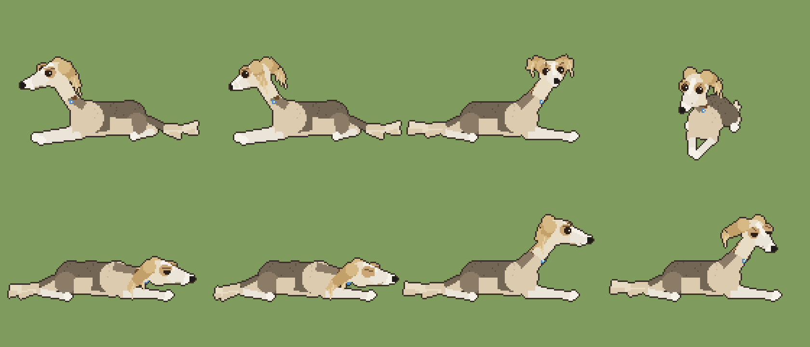
test/juno.js): resting with ears perked, looking at you, alert at a bird, facing you, chin down, asleep, petted, ears back.PARKED The walking Juno (gallop, the squirrel chase, trotting away from Bo) exists in git history; Julia paused it after the first pass. Any resumption starts from the bed dog's head and proportions (§10.5).
3.3Wildlife
| Kind | Place | Spawn | Behavior | Stimulus | Flees from |
|---|---|---|---|---|---|
| Pigeon | room (outside the window) | periodic | lands on the feeder outside the sill, pecks, leaves | ledge want +7; chatter 10; Juno looks | – |
| Feeder birds (13 kinds) | yard | by season weight, up to 3 at once | perch on tray / side / pole / trunk / ground / lawn; quirks: crest, bar, mask, cap, eye ring, tail up, hops, slow, boss, cling, head down | chatter 10; ledge; stalk when on the ground | a cat within 44–64 px; the squirrel |
| Squirrel | yard | every 1800–4400 ticks | down the trunk; 40% raids the feeder; back up | chatter, stalk; Juno boofs | – |
| Butterflies (2) | yard, day | continuous | visit grown flowers | bat only when below z 34 | – |
| Leaves | yard | occasional | let go of the tree, drift down | bat | – |
| Fireflies | yard, night | continuous | drift over the lawn | none | – |
Bird kinds (Northern Virginia regulars)
| Kind | Perches | Quirks | Season |
|---|---|---|---|
| Northern cardinal (m, f) | tray, side | crest | all year |
| Blue jay | tray | crest, boss (clears the tray) | all year |
| Carolina chickadee | side, pole | cap | all year |
| Tufted titmouse | side | crest | all year |
| American goldfinch | tray, side | bar; yellow in summer | all year, color by season |
| House finch | tray | all year | |
| Carolina wren | side, ground | tail up | all year |
| Downy woodpecker | pole, trunk | cling, bar | all year |
| White-breasted nuthatch | trunk, pole | cling, head down | all year |
| Mourning dove | ground, lawn | slow | all year |
| American robin | lawn | hops | spring–fall |
| Dark-eyed junco | ground | winter |
jungle.js Yard.birdKinds()
3.4Cast
| Coat | Note | Personality | Baseline | Unlock |
|---|
live from rex.js BZ.COATS, BZ.COAT_PERSONALITY · adoption order: Bunny, then the rest; names drawn from BZ.NAMES (Mochi, Pickle, Noodle, Tofu, Juniper, Olive, Pepper, Miso, Fig, Basil, Moth, Pilot, Velvet, Crumb, Radish, Wren, Pip, Marcel, Quill, Biscotti)
4Things
Every placeable object is a row in BZ.ITEMS: a label, a hint, a hit box (r, h) and flags. The flags are the design: they are the complete list of what a thing affords. Classes are groupings of flags; the toy box groups (Comfort, Plants, Play, Treats, Garden) are the player-facing view of the same taxonomy.
4.1Affordance flags
| Flag | Meaning | Cat behavior unlocked |
|---|---|---|
| bed | cats may nap on or in it; it has a bed contract (§4.3) | toBed, bed, bedHop, planBed |
| soft | kneadable | biscuits before the nap |
| burrow | cats go under it | the blanket lump |
| box | enterable; fresh for 5400 ticks | boxIn 14, periscope, ambush from inside |
| chair | has a seat and an edge | dangle naps (EDGY) |
| hide | something to lurk behind or under | lurk, ambush |
| floor | flat on the ground (sun) | sunroll, shared sun |
| plant / safe | a plant; safe ones are nibbled, the rest batted or sniffed | plantPlay, graze |
| nip · sneeze | catmint; lavender | roll then zoom; sneeze |
| ball | a throwable toy with physics | pounce, bat, toss, carry, kick |
| snack · consumable | dropped, eaten, gone | beg, eatTreat |
| tool | lives on the cursor, not in the room | laser, wand, brush, sweater, can, trowel, seeds |
| seed | a packet; click a plot to plant | becomes a sprout (garden: true) |
| fixed | owned by the place; never dragged or saved | fixtures (§4.4) |
| places | which toy boxes offer it (default: all) | garden tools are yard-only; daybed and table are desk-only in the box |
4.2Catalogue
Generated from the registry as this page loads; icons are drawn by the engine. "What cats do" is the design note per thing.
4.3The bed contract
BZ.bedGeom(item, size) returns, for any thing with bed, everything a cat needs to use it. A thing without a branch here gets the default (sit on top). Adding a bed means adding a branch.
| Field | Meaning |
|---|---|
| front | where she walks to before the hop |
| spot | where she lands (the nap spot); multi-seat beds return one per slot |
| rootPx | how high above the floor line her body root sits |
| clip | a clip rectangle for beds that hide the body (pod, cube), or null |
| sortY | the draw-order y while she is in it (so the bed's near edge draws over her) |
| face | which way she faces once settled |
// items.js — the lamp table: two cushions; the 'seat' fixture is the second
if (it.type === 'lamptable' || (it.type === 'seat' && it.parent && it.parent.type === 'lamptable')) {
const P = it.type === 'seat' ? it.parent : it, slot = it.type === 'seat' ? 1 : 0, k = s * 0.95;
return { front: [P.x + (slot ? 12 : -12) * k, P.y + 12 * k], spot: [P.x + (slot ? 9 : -9) * k, P.y - 2 * k],
rootPx: 27.5 * k, clip: null, sortY: P.y + 0.3 + slot * 0.01, face: slot ? Math.PI / 2 - 0.4 : Math.PI / 2 + 0.4 };
}4.4Fixtures and surfaces
| Fixture | Place | Type | Note |
|---|---|---|---|
| ledgeL · ledgeR | room | ledge | the sill cushions; chatter at the pigeon |
| daybed + seat | room | daybed · seat | permanent; Juno holds the right cushion (dogSeat) |
| cubby | room | cubby | the felt cube in the bookcase |
| coffee table | room | ctable | permanent; also a surface |
| stoop | yard | stoop | the steps |
| potTop | yard | ledge | the potting-shelf perch |
| tire | yard | tire | swings |
| adk | yard | adk | Adirondack chair, room for two |
| dogbed | yard | dogbed | Juno's; dogOn |
| Surface | Place | Takes |
|---|---|---|
| sill | room | small things; a cat on the ledge pushes them off |
| bookTop · shelfTop · shelfMid | room / yard | plants, toys, treats |
| ctable | room | the orchid, toys; knocked off from on top |
| stand · landing | yard | the wire stand; the top step |
Rules: syncFixtures() keeps the same fixture objects across relayouts so a sitting cat isn't knocked off. Small things set down near a surface snap onto it (surf, su, lift). Fixtures are not obstacles yet (OPEN, §10.4).
jungle.js fixtures(), surfaces() · world.js syncFixtures(), resnap()
5Places
A place implements one interface: layout · paint · drawBack · drawFront · fixtures · surfaces · props · stimuli · birdSpot. Each keeps its own set of things (World.sets[place]); switching stashes and restores them.
| Place | Stage | Fixtures | Surfaces | Plots | Wildlife | Light |
|---|---|---|---|---|---|---|
| Bo's Jungle room | 436×363 @ PX 2 in a 1280×800 window; floor at 0.50 H | 2 ledges, daybed + seat, cubby, coffee table | sill, bookTop, shelfTop, shelfMid, ctable | – | pigeon | window view by phase; sunbeam; night dim with the lamp's pool |
| Backyard yard | same canvas; floor at 0.44 H + 7 | stoop, potTop, tire, adk, dogbed | shelfTop, shelfMid, stand, landing | wall bed, lawn bed, 2 grass patches | 13 birds, squirrel, butterflies, leaves, fireflies | sky by phase; drifting dapple and sun pools; porch light from dusk |
| My desktop desk | the whole screen (Mac app only) | – | – | – | – | the sunbeam brings its own window |
5.1Bo's Jungle
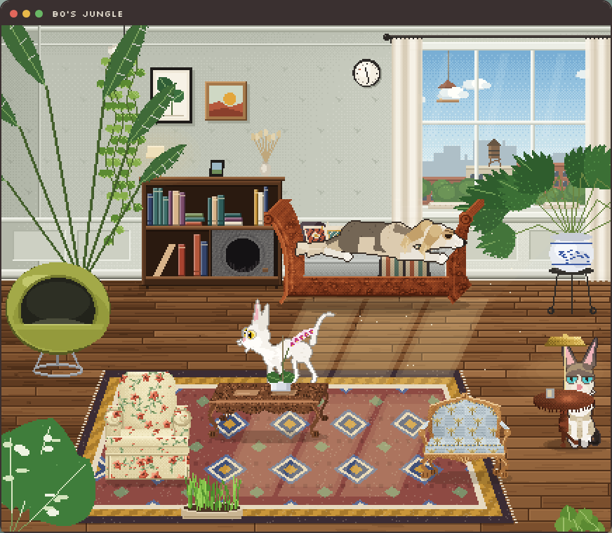
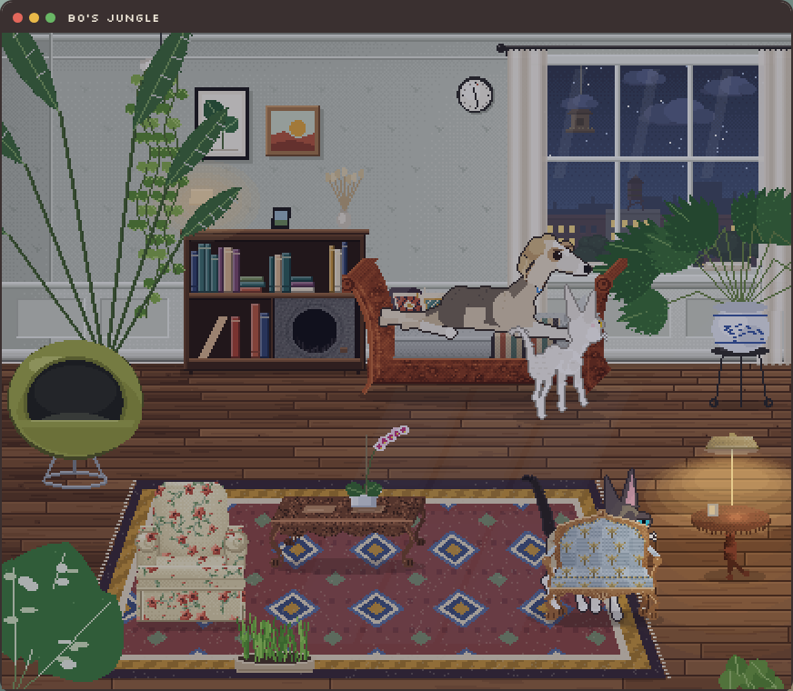
rgba(12,18,52,0.30)) over everything with the lamp table's warm pool cut out of it; the city lit in the window.5.2Backyard
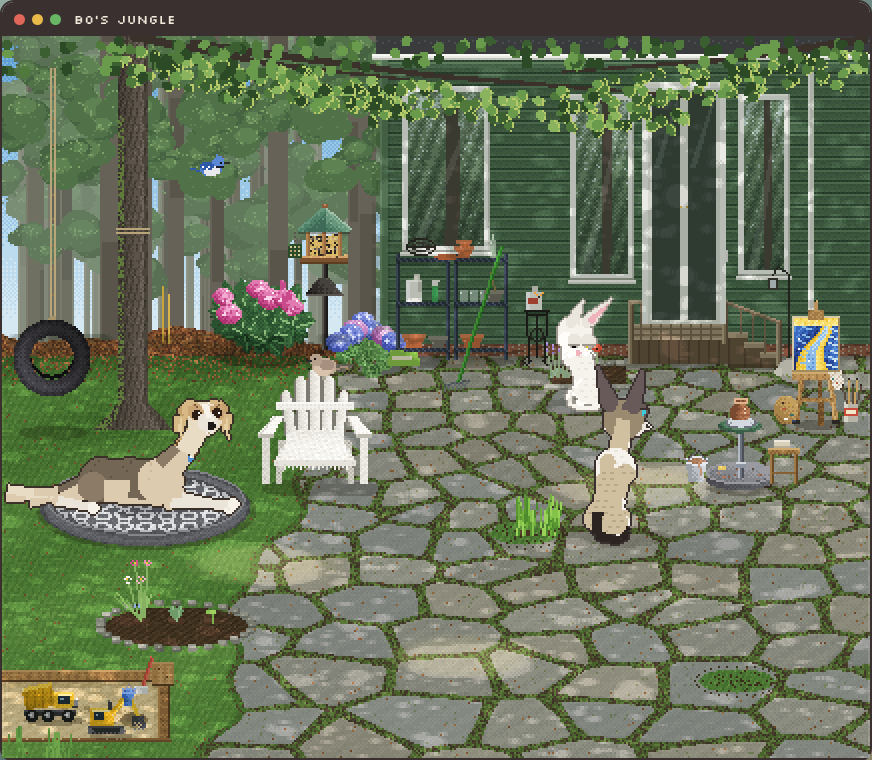
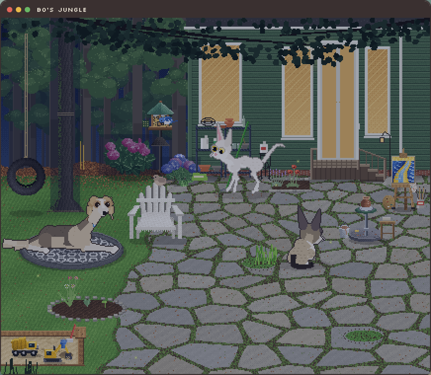
Layout anchors (yard)
All positions are relative to S (the studio's left edge), F (the floor line), W, H, so phones and the desktop both fit. Dog bed (tree.x+6, F+76); tire (tree.x−40); easel (S+216, F+34); kick wheel (S+182, F+66); feeder (S−30, base F−2, top F−72); rhododendron (S−62, F−3, r 27); hydrangea (S−10, F+4, r 17); sun pool 1 (0.3 W, fy 0.5); lawn bed (fy 0.66); Adirondack max(0.36 W, S−36).
jungle.js Yard.layout()
5.3My desktop
Roam mode (Mac app): the stage is the whole screen, the cats walk over the player's windows, the sunbeam carries its own window, and the daybed and coffee table can be put out. On phones the browser version shows part of the room with a camera that follows the cats (stage min width 900 CSS px); dragging the ground pans.
5.4Time of day
| Phase | Hours | Room | Yard | Behavior |
|---|---|---|---|---|
| night | 20:30–05:30 | dim with the lamp pool; city lights in the window | dark sky, lit windows, porch light, fireflies; no birds or butterflies | Juno sleeps 75%; lamp table +3; sun pools off |
| dawn | 05:30–08:00 | low warm light; curtains glow | pink sky; first birds | birds spawn |
| day | 08:00–17:30 | sunbeam across the floor | dapple and sun pools drift with the hour | peak wildlife |
| dusk | 17:30–20:30 | orange window | porch light on | Juno sleepier |
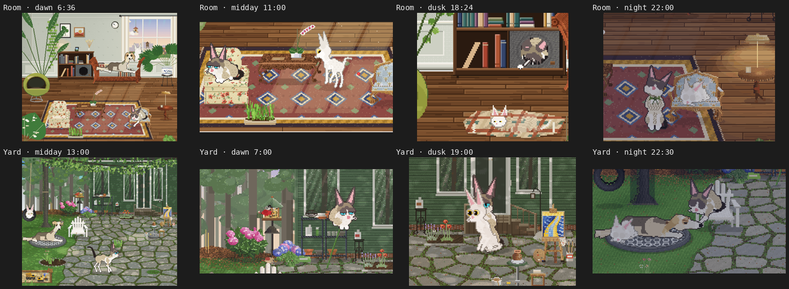
BZ.hourOverride. The clock is real (phaseNow()); the override exists for renders and tests.6Interactions (the hand)
All input is pointer events (mouse, pen, touch). A lifted finger means no pointer: the laser disappears, cats stop staring. Hit order: a cat's drawn balls (regions head / back / leg / tail / face), then Juno's, then things, then the ground. The verbs below are the complete player vocabulary.
| Verb | Input | Target | Precondition | Effect | Feedback |
|---|---|---|---|---|---|
| Pet | press + stroke | cat (any region) · dog | cat not BUSY-held | petted state; love +, cuddle +; dog: ears back, squint, tail | purr, lean, ears, tail thump |
| Poke | quick tap | cat face / leg / tail · dog | flinch; tail flick; dog: head up, brows | mew; a look | |
| Carry | press + drag past the bbox | cat | not in a clipped bed | held state; dangles from the pointer | a warm ring shows the drop target |
| Place in bed | release over a bed | cat → bed | bed has a free slot and no dog on it | bed state at that slot | settle animation |
| Put down | pick in toy box, click | thing → floor or surface | one of each per place | thing placed; small things snap up onto surfaces | in-hand strip shows what is held |
| Pick up / throw | press on a thing + drag / release with velocity | thing | not fixed | moves; balls get physics | thunk on landing |
| Laser | hold the tool, move | floor | a stimulus at the pointer; Bunny chases, Bo watches | red dot | |
| Wand | hold the tool, move | air | a high stimulus; leaps, wall leaps | feather on a string | |
| Brush | hold the tool over a cat | cat | groomed; love +; elevator butt | loose fur | |
| Dress / undress | Sweaters tool, click a cat | cat | sweater with her bow (green Bo, brown Bunny); Bo sits down in it | bow drawn from the front | |
| Feed | Treat / Shrimp: click; Food: put down | floor | beg then eat; bowl has 30 servings | crunch | |
| Plant | seed packet, click a plot | plot slot | yard; free slot | a sprout with growth seconds | packet icon in hand |
| Water | hold the can over a plot | plot | yard | growth faster; nobody likes the can (grump +) | drops |
| Dig up | trowel, click a sprout | sprout | yard | removes it | |
| Pan | drag on empty ground | camera | phone layout | camera x | |
| Tidy up | button | all things | everything back in the box | ||
| Adopt / send home | toy box, cat chips | cat | Bunny first; × on a chip | adds or removes a cat; relationship record | enter through the doors |
| Switch place | Where she lives | world | stash and restore the place's things; cats enter | ||
| Mode · sound · size | toy box | world | Mac app for roam | habitat / roam; sound on/off; cat size |
world.js onDown / onMove / onUp / updateInteractive · panel.js
7Systems
| System | Purpose | Rule | Parameters | Status | Source |
|---|---|---|---|---|---|
| Clock and light | the places change with the real day | phaseNow() from the local hour; each phase repaints sky, window, light, tint; BZ.hourOverride pins it | night < 5:30, > 20:30; dawn to 8; day to 17:30 | SHIPPED | jungle.js phaseNow · items.js isNight |
| Garden growth | plants grow while you are away | growth in seconds of sun; stage at 25 / 110 / 260; watered plants grow faster; catches up from savedAt | catch-up cap 2 h; grazable at stage 3 with 6 servings | SHIPPED | items.js growSprout |
| Physics and surfaces | toys bounce, things sit on shelves | z / vz per thing; balls thrown with release velocity; small things snap to the nearest surface; cats on a surface push one off | gravity, bounce, stage clamp | SHIPPED | world.js tick · resnap |
| Attention | cats notice selectively | interest per stimulus per cat; threshold raised by aloof; latency window; BUSY ignores | Bo 22–70, Bunny 5–22 ticks; butterfly z < 34 | SHIPPED | world.js updateStimuli |
| Relationships | two cats feel like a pair | bond and tension per pair; sun cools tension; brawls raise bond; bed/sun sharing weighted by bond | brawl needs tension < 0.6; groom bond > 0.55 | SHIPPED | world.js rels |
| Needs and moods | drift biases choice | §3.1.2; no failure thresholds | belly, energy, love, greens; grump, cuddle, play | SHIPPED | world.js Cat.think |
| Sound | voice without samples | formant synth; purr, thunks; off until enabled | pitch by size | SHIPPED | sound.js |
| Persistence | nothing is lost | save v4 (§9.3) on change; older saves migrate; room fixtures never saved | Mac: state.json; web: localStorage | SHIPPED | world.js save / load |
| Camera and layout | one engine, every screen | stage from the host; min width on phones with a camera that follows the cats; layout anchors relative to S, F, W, H | PX 2; min 900 CSS px on phones | SHIPPED | world.js layoutStage · setHabitat |
| Obstacles | cats path around fixtures | not implemented; cats walk across Juno's bed | OPEN | — |
8Presentation
8.1Character rendering: Ballz
PF Magic's technique (Ballz 1994 → Dogz 1995 → Catz 1996), rebuilt from the reverse-engineering record in Appendix B. A character is a list of balls (shaded discs) and tapered lines between them, re-posed every frame in 3D, projected with a yaw-and-pitch camera, sorted far to near, and drawn with a one-pixel outline around the whole silhouette. There are no sprite sheets. Additions here: Cornish Rex proportions (egg head, huge ears, Roman nose, long legs, whip tail), marcel-wave speckle on the coat, IK forelegs, a 15-joint spring tail with a gesture layer, and the outline as one image-data pass.
8.2Environment painting rules
- One light, upper right (the window; the sun). Top and right edges catch it; bottom and left edges shade. Contact shadows are
rgba(20,14,6,0.28)ellipses. - Ramps of 5–8 steps, one per material; never an ad hoc color (§8.3).
- Ordered dither:
rampAt(ramp, L, x, y)adds a 4×4 Bayer value to the light level before picking a step. Per-pixel shading goes throughshade(ctx, pts, fn)(polygon scanline fill). - Cache big things once per size (
cached(key, w, h, ox, oy, paint)); they cost nothing per frame. - Specific over generic: painted from the filed photo. If a thing is big enough to look at, draw it like a chair: shaded polygons, specific detail. The first easel and kick wheel were flat sketches and were sent back.
- Alive, quietly: clouds, curtains, dust, a pigeon; dapple, leaves, butterflies, birds, a squirrel. Nothing loud.
8.3Palette
live from rex.js BZ.RAMPS
8.4Character sheets
| Bo | Bunny | Juno | |
|---|---|---|---|
| Coat | seal point & white: seal mask, ears, tail; cream body; white chest, legs, muzzle | all white | sable saddle over cream; white chest, legs, muzzle, a blaze up the face; golden ears |
| Eyes | boblue: bright, light, shiny teal-blue | gold | dark brown in tan patches; eyebrows that lift |
| Build | small; long legs; tucked waist; huge ears; Roman nose; marcel waves | tinier, older (size 0.8) | 1.28× the cats; narrow domed skull, long muzzle, ears that perk at rest and lift like flags |
| Carriage | languid, deliberate; tail low with an S, tip up | brisk; tail up with a hook | lying only; the head does the talking |
| Signature moments | the sill in hard sun; the felt cube with one arm out; one arm hanging off a pillow; watching the laser | the wallop; the box periscope; curled at the foot of Juno's bed | eyebrows up at Bo; tail thumps when Bunny arrives; one boof at the squirrel |
8.5Readability gates
- At actual size (PX 2, size M), can you tell what it is in under a second?
- Does the silhouette alone say the pose? (The blanket lump needed ears and a peeking face before it read.)
- Is it hers? Side by side with the photo in
refs/. - Legs: nobody sinks, crawls, or goes stumpy after a nap, a wake or a brawl.
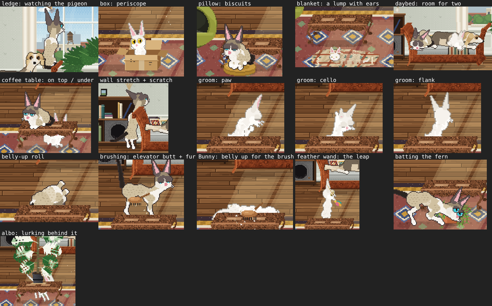
test/moments.js) is the look test for behavior: the ledge, the box periscope, biscuits, the blanket lump, the daybed for two, the coffee table, the wall stretch, three grooms, the belly-up roll, brushing, the wand leap, batting the fern, lurking behind the albo.8.6Motion principles
- Languid by default ("superlanguine"): walks start slow and settle; the stop eases over the last steps.
- Snappy-stretchy for play: the lunge and the crab hop come from her videos; the wiggle precedes the pounce.
- Intention in the walk: head leads, gaze on the target, tail carries mood (gesture layer: flick, hook, S, wrap).
- Tempo per cat: Bo 0.85, Bunny 1.18; everything she does scales.
9Technical
9.1Architecture
Plain browser JavaScript, one global BZ, no bundler. Load order: font-data, raster, rex, cat, items, sound, world, jungle, panel. The same nine files run in the Mac app, the browser page, and this document.
| File | Holds |
|---|---|
| src/raster.js | pixel primitives: drawBall, drawLine (tapered), drawThin, ellipse, fillPoly, ball-span clipping |
| src/rex.js | ramps, coats (color slots and masks), personalities, adoption order, names |
| src/cat.js | skeleton, BZ.POSES, gaits, IK, tail springs, camera and projection, drawCat + outline pass, BZ.Dog |
| src/world.js | Cat (states, attention, needs, naps, beds, petting), World (places, items, fixtures, surfaces, input, camera, tick, render, save/load) |
| src/items.js | BZ.ITEMS, BZ.PLANTS, BZ.GARDEN, bedGeom, every item painter, icons, hit tests |
| src/jungle.js | BZ.Jungle (room) and BZ.Yard: painting, fixtures, surfaces, props, birds, squirrel, dog glue, night |
| src/panel.js | the toy box UI, portraits |
| src/sound.js | formant voices, purr, thunks |
| desktop/ | Electron: main.js, renderer.js, index.html, preload.js, panel.html; engine/ is a build copy of src/ |
| web/playpen.src.html | the browser host (desktop, phone sheet, portrait tablet); built to web/playpen.html |
| test/ | Playwright harnesses (§9.5) |
| docs/ · refs/ | the record: brief, process, protocol, architecture, art direction, backlog, changelog, decisions, specs, this document; every reference filed |
9.2Frame pipeline (33 ms)
tick()
items physics (z / vz), surfaces, garden growth
stimuli scene.stimuli() + laser / wand / toys → attention
rels bond / tension drift, comfort zone
cats think(): s_<state>() · animate(): pose lerp, gait, tail springs, lids, ears
scene tick(): birds, squirrel, butterflies, dog
render()
drawBack bg canvases, window view, doors, dapple, pools
ents cats + props + items, sorted by y (far → near)
each cat buildSkeleton → project → balls + lines sorted by depth → outline pass (image data) → blit
drawFront fg canvas (fronds, boughs), night dim, tint
held the thing on the cursor, the carried catEverything renders at PX 2 with imageSmoothingEnabled off. The outline pass is the one per-cat image-data read per frame. Big scene elements are cached per size.
9.3Data: the save (v4)
{
"cats": [{ "coat": "bo", "name": "Bo", "pers": "bo", "x": 311, "y": 288,
"needs": { "belly": 62, "energy": 41, "love": 70, "greens": 30 },
"sweater": { "bow": "#5f7a3a" } }, { "coat": "bunny", "name": "Bunny" }],
"sets": { "room": [{ "type": "pod", "x": 115, "y": 250 }, { "type": "orchid", "surf": "ctable", "su": 0.62 }],
"yard": [{ "type": "sprout", "kind": "catgrass", "plot": "lawnBed", "slot": 2, "g": 2140, "water": 0.6 }],
"desk": [] },
"scene": "room", "rels": { "bo|bunny": { "bond": 0.71, "tension": 0.18 } },
"size": 1.2, "sound": true, "v": 4, "savedAt": 1760320000000
}Older saves (items, v3) load into both room and desk. Room fixtures are never saved. Sprout positions are recomputed from plot and slot on layout. Growth catches up from savedAt, capped at two hours. The Mac app keeps it at ~/Library/Application Support/Desktop Bo/state.json; the web page in localStorage.
9.4Hosts
| Host | What differs | Update path |
|---|---|---|
| Mac app | Electron; a habitat window plus a toy-box popover; roam mode; /Applications/Desktop Bo.app | an update zip swaps engine/, re-signs ad hoc, relaunches (§9.6). Changes to desktop/*.js need a full rebuild. |
| Browser page | one published HTML with the engine inlined; phone layout with a bottom-sheet toy box and a camera; Add to Home Screen works | republish web/playpen.html to the same URL |
| This document | the engine in an iframe with hour pins; sound off; its own save key | republish with the engine files (§11.9) |
9.5Tests
| Command | Proves | Gate |
|---|---|---|
| node test/scene.js room|yard out.png [ticks] | the habitat after N ticks | look test for any scene change |
| node test/one.js "t=orchid&s=1.6&px=4" out.png | one thing at 4× | look test for any new thing |
| node test/moments.js out.png | staged contact sheet (Figure 9) | look test for behavior |
| node test/juno.js · node test/junoyard.js | Juno's pose sheet; Juno with Bunny, a hand, Bo's look | look test for the dog |
| node test/soak4.js 12000 yard|room | long run with tools, surfaces, the garden; state histogram | must print errors: none before any ship |
| node test/soak3.js 24000 habitat|roam | the original all-items soak | same |
| node test/ux.js phone|tablet|desktop out.png | scripted walkthrough with touch or mouse | UI changes |
| xvfb-run -a npx electron --no-sandbox test/electron-smoke.js | the Mac app boots headlessly | desktop changes |
| node test/gif.js · node test/gifs2.js <scenario> | gameplay GIFs | for the report |
9.6Build and deploy
python3 build.py && cp web/desktop-bo.html web/playpen.html # 1 build; publish web/playpen.html to the same URL
rm -rf dist/update/engine && cp -r desktop/engine dist/update/engine
cd dist && zip -qr DesktopBo-update-<MMDD><letter>.zip update # 2 a NEW name every time
sha256sum DesktopBo-update-<MMDD><letter>.zip # 3 copy to the Mac (~/Applications); compare
ditto -x -k DesktopBo-update-….zip ~/Applications/dbo-… # 4 on the Mac
zsh ~/Applications/dbo-…/update/update.sh # quits, swaps engine/, re-signs ad hoc, relaunches
grep -c "<round marker>" "/Applications/Desktop Bo.app/Contents/Resources/app/engine/*.js" # 5 verify
git bundle create desktop-bo-<round>.bundle <base>..main # 6 mirror the repo to the MacRules: the builder deploys and verifies (hash + grep); Julia does not run payloads. Never delete her files; quarantine to _quarantine/<date>/ with a MANIFEST.
10Production
10.1Process: a round
- Intake: her words into
docs/backlog.mdwith the date; every reference filed before designing from it. Mid-build messages are new rows, not interruptions. - Look before designing: open the refs; for motion, a frame sheet from the video. Write the two or three observable facts the work must hit.
- Design the behavior, not just the pose: trigger, personality, shape, exit, interplay.
- Build to the art rules; no new engine files; keep saves backward compatible.
- Verify: close-ups, scene shots, the contact sheet, soaks with "errors: none", the leg check, the readability gates.
- Ship: build, publish, unique zip, deploy, hash + grep. GIFs or a contact sheet for her.
- Record: changelog, backlog statuses, decisions, spec version, refs; commit
round <date><letter>: <what she can see>. - Report: lead with what she can see. No step recaps. Name what is left.
10.2Feature status
| Feature | Status | Round | Note |
|---|---|---|---|
| Ballz cats, legs, tails, gaits | SHIPPED | 10-06 → 10-10c | legs fixed for good in 10-10c |
| Bunny; relationships; brawls | SHIPPED | 10-08 | |
| Bo's Jungle (RCT room) | SHIPPED | 10-10c, d | |
| Beds, boxes, surfaces, knock-offs | SHIPPED | 10-10d, e | |
| Backyard, garden, birds, squirrel | SHIPPED | 10-10e, 10-12g | |
| Touch, phone layout, camera | SHIPPED | 10-12g | |
| Juno on her bed (yard) and the daybed (room) | SHIPPED | 10-12h, i, j | |
| Night, porch light, hour override | SHIPPED | 10-12i | |
| Juno walking | PARKED | 10-12g | paused by Julia |
| Motion pass two (Bunny's walk, pounce wiggle timing) | PARTIAL | 10-10f | lunge and crab hop shipped |
| Stone bunny visit | PARTIAL | 10-10e | pose matching to revisit |
| Fixtures as obstacles | OPEN | cats cross Juno's bed | |
| Mom mode (iPad) | OPEN | waiting on device and setup answers | |
| Gaze system, pod carry (from the other chat) | OPEN | offered, not requested |
10.3Rounds (playtest log)
Each row is an observation from Julia and what changed. Her words are the acceptance test.
| Round | Observation | Change |
|---|---|---|
| 2026-10-06 | a desktop pet of Bo, Petz-style | Bo in Ballz, the pod, cat grass, the laser, roam on the desktop |
| 2026-10-08 | "snappy stretch", "languid walk", drop cats into the pod, more chairs, Bunny | Bunny (wallops, body-slams, brawls); Bo's teal-blue eyes; floral, emerald and blush chairs; felt mouse and shrimp; formant voices |
| 2026-10-09 / 10a–c | legs "stuck in the ground", "crawling on elbows", "stumpy"; "fluid, varied play"; "RCT-quality scenery" | legs fixed (roll-residual lift; short thigh, long shank); kick, toss, crab, wall leaps; the RCT room rewrite; app findable in Applications |
| 2026-10-10d | carved coffee table and antique daybed "a wee bit better"; monstera albo; wall stretch; expressive tails | window ledge; the desktop sunbeam; pillow, blanket, box; brush and wand; 15 plants; the daybed rebuilt; tail gestures; petting reactions; toy-box tabs |
| 2026-10-10e | the two chairs from the photos; the backyard "to bask"; a plant-care area; beds to plant; pod 20% smaller; bookshelf cubby; the dangle nap; "a clear process for game design, and a really tight record"; "no way to unadopt"; "blanket doesn't read" | the backyard with the garden; Poppy and Dragonfly chairs; surfaces with knock-offs; the felt-cube cubby; the dangle pose; the blanket lump redrawn; × to send a cat home; AGENTS.md + docs/ + refs/ |
| 2026-10-10f | sweaters with ribbon bows; the felted bag; the lamp table; the motion videos | sweaters (green bow Bo, brown Bunny); the felted bag; the lamp table for two; the lunge and the crab hop |
| 2026-10-12g | "a complete pass to make the UX and UI clean … working well on mobile"; "this pop up is unnecessary"; easel + pottery wheel; sandbox; a bird feeder with NoVA birds; rhododendron + hydrangea; Juno | touch everywhere, phone sheet, camera, in-hand strip, no hover tag; feeder with 13 birds; bushes, easel, wheel, sandbox; Juno first pass (walking) |
| 2026-10-12h | "seeing Juno — terrifying lol"; "pause fully building Juno … on a big dog bed … you can pet her"; "REALLY work on the art fidelity"; "ears perked and nose / eyes ratio were slightly better"; "a lump under her snout"; the glacial-valley painting | Juno on her bed (watch, doze, sleep, petting, Bunny joins, Bo's look); easel, wheel, bushes, feeder, sandbox redrawn at the chair standard; the painting; her face from her screenshots |
| 2026-10-12i / j | "in the living room, can juno please be on the daybed"; "legs stumpy, snout bumpy, on the bed weird; bed up 15%"; "gifs of different times of day … art direct them nicely"; "wrong chair (lighter floral)" | Juno on the daybed's right cushion; one rest machine for both scenes; night in the room; porch light at dusk; hour override; smooth muzzle, longer legs, bigger daybed; eight GIFs, re-staged with the Poppy chair |
| 2026-10-20 | "a proper, well designed, game design document … model it after the Mad Money Tycoon GDD"; then: "the gimmick of the Windows 95 aesthetic is taking over … think ontologically and taxonomically" | this document, v1.0 (Win95 chrome) → v1.1 (neutral, class-structured) |
10.4Backlog
| Date | Request | Status · note |
|---|---|---|
| 2026-10-10 | A simple iPad (or phone) version for Julia's mother | OPEN options sent (home-screen web app with optional Guided Access; TestFlight; a calm video). Waiting on: her device, who sets it up, a note on the opening screen. |
| 2026-10-12 | Juno, the full walking build | PARKED by Julia; resume from the bed dog's head. |
| 2026-10-12 | Cats walk across Juno's bed as if it weren't there | OPEN fixtures aren't obstacles yet. |
| 2026-10-10 | Motion references, second pass | PARTIAL still to study: Bunny's walk and tail carriage; the wiggle-before-pounce timing. |
| 2026-10-10 | Bunny visits the stone bunny | PARTIAL pose matching to revisit. |
| earlier | Port the lost gaze system and pod carry | OPEN offered, not requested. |
10.5Decisions
| Decision | Because |
|---|---|
| Hind leg is short thigh, long shank; roll residual can't lift the body. | Every earlier proportion read as munchkin or stumpy. |
| Unique update zip names, verified by hash. | A stale zip once meant a fix never reached the Mac. |
| Each place keeps its own things; the daybed and table are room fixtures and still placeable on the desktop. | The room owns its furniture; the desktop has none. |
| Juno stays on her bed; her expressiveness is in the head. | Julia's call after the walking build; the head is what she reacts to. |
Bo never picks a bed Juno is on (?? 3.5, not || 3.5). | A 0 weight must stay 0. |
| Scenery is drawn at item scale with the item technique. | If it's big enough to look at, draw it like a chair. |
| Night in the room is a dim with holes, not darker art. | One painter per scene; the lamp pool is a cut-out. |
| No new engine files. | The Electron index lists them; the update swaps only engine/. |
| One rest machine for Juno in both scenes. | Same dog, same behavior; the scene only supplies the environment. |
10.6References
Her photos and videos are ground truth; when the builder's eye and the photo disagree, the photo wins. Filing: refs/<category>/<subject>-<what>-<detail>.jpg; categories bo · bunny · together · motion · furniture · plants · scenes · juno · technique · app-feedback. Each entry in refs/refs.json says what it shows and what it informs. Photos 2000 px JPEG q88; video 720p H.264 no audio; her app screenshots go to app-feedback/ with the note she sent. 71 filed.
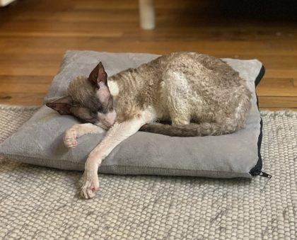
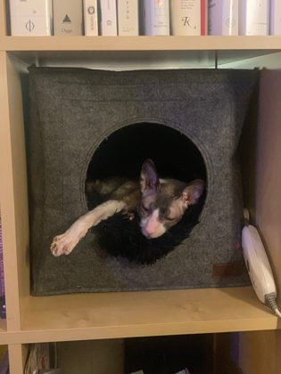
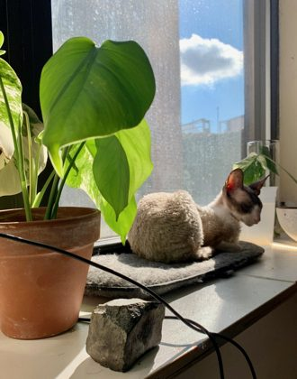
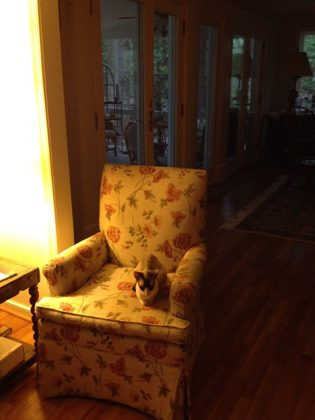
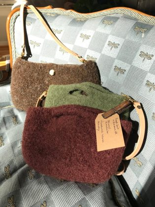
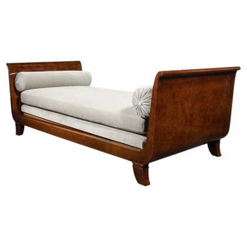
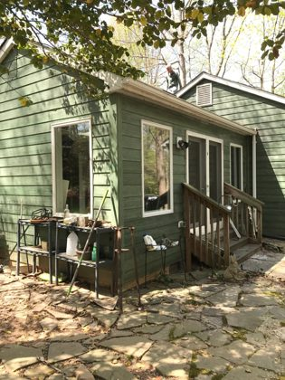
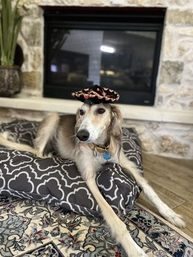
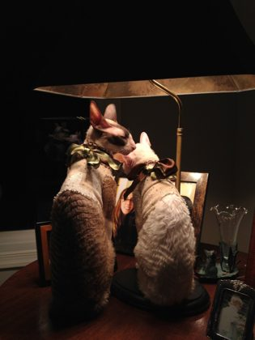
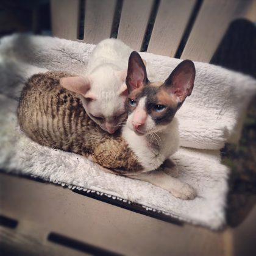
11Recipes
Procedures for any builder in any session. Each names the files it touches and the test that closes it.
11.1Run it
open web/playpen.src.html # loads src/ directly; this is the dev page
python3 build.py # src → desktop/engine + web/desktop-bo.html
cp web/desktop-bo.html web/playpen.html
node test/scene.js room out.png 200 # look at the room (or: yard)
node test/soak4.js 12000 yard # behavior soak: must print "errors: none"11.2Add a thing
- File the reference photo in
refs/furniture/(or plants/); add a row torefs/README.mdandrefs/refs.json. - Register it in
BZ.ITEMSwith its flags (§4.1) and hit box; add it toBZ.ITEM_ORDERand the right group inBZ.ITEM_GROUPS. - Write the painter in
items.jsunder the painting rules (§8.2), wrapped incached()if it's big; dispatch it fromBZ.drawItem. - If cats can sit on it: a branch in
BZ.bedGeom(§4.3), a weight instartNap(§3.1.6), andEDGYif it has an edge. - Tune the icon scale in
BZ.drawIcon. Close withnode test/one.js "t=<type>&s=1.6&px=4", then a scene shot.
// items.js — the registry row
lamptable: { label: 'Lamp table', hint: 'mahogany, a brass lamp, warm for two', r: 24, h: 74, bed: true },11.3Add a nap pose
A pose is a set of keys on BZ.POSES: hip and chest positions, back and belly lift, head offsets and angles, paw targets [forward, up, side] with a leg mode (ik | flat | tuck | sit | hide), tail shape, ears, lids. Write the two or three observable facts from the photo first. The dangle nap was: curled body; one foreleg poured out long; the paw hangs over an edge, toe beans down.
// cat.js — a nap pose, keyed off the crescent
dangle: P({ hipX: -8, hipY: 7, chestX: 7, chestY: 7.5, backLift: 5, headDX: -1, headDY: -7, headPitch: -8, headYaw: 18,
fl: [18, -9, 2], flMode: 'ik', // the poured-out foreleg, below the surface: it hangs
fr: [5, 1, -3], frMode: 'tuck', tailCurl: 0.9, tailWrap: 1, lid: 1 }),
// world.js — who does it and where: nap-style weights per bed
pick({ crescent: 3, loaf: 2, baguette: 1, sphinx: 1, dangle: EDGY.includes(it.type) ? (this.isBo ? 2.5 : 1.2) : 0 })Close with node test/naps.js and a soak so no leg stays bent after she wakes.
11.4Add a behavior
- Design the five parts: trigger, personality, shape, exit, interplay.
- Add
s_<name>()toCat. Available:this.st(ticks in state),this.anim,this.lookAt,this.turnToward(),this.tailGesture(),this.say(). End withsetState('idle')or'wander'. - Put it in
BUSYif the world mustn't interrupt it, inNAPPINGif energy should recover. - Trigger it: a weight in
pickActivity()plus a line in thegomap ofs_idle, or a push from outside (the scene, the other cat, the pointer). - Stage it in
test/moments.js; add a row to §3.1.3; soak.
// world.js — Bo's look at Juno, entered from the scene when Bo wanders within 85·size of the dog
s_skeptic() {
const d = this.skepAt; if (!d) { this.setState('idle'); return; }
this.gait = null; this.anim = this.st > 30 && this.pers.sleepy > 50 ? 'sit' : 'stand';
const H = d.screen && d.screen.head ? d.screen.head : [d.x, d.y - 20];
this.turnToward(this.angleTo(d.x, d.y), 1); this.lookAt = [H[0], H[1]]; this.perk = 0.7; this.pose.earBack = 0.55;
if (this.st === 10) this.tailGesture('flick'); if (this.st === 24 && ri(3) === 0) this.say('meow');
if (this.st > (this.skepT || 90)) { this.pose.earBack = 0; this.mood.grump = Math.min(1, this.mood.grump + 0.05); this.setState('wander'); }
}11.5Add scenery
- Anchor it in
layout(st)relative toS,F,W,Hso phones and the desktop both fit it. - Paint it in its own
paint<Thing>(g)withshade(),rampAt(),ellPts(),leafPts(); call it frompaint()in depth order. Background things go intobg; things cats pass behind becomeprops()entries with a sort y. - If cats can sit on it, return a fixture from
fixtures()with abedGeombranch; if small things can be set on it, a surface fromsurfaces(). - Close with
node test/scene.js yard, a 3× crop, and the photo side by side.
// jungle.js — a prop that sorts with the cats, painted once
props() { return [
{ y: Yo + t.base, draw: (ctx) => this.drawTrunk(ctx, X + t.x, Yo + t.base) },
{ y: this.dog.y + 0.2, draw: (ctx) => this.dog.draw(ctx) },
{ y: Yo + this.easel.foot, draw: (ctx) => this.drawStudioStuff(ctx, X, Yo, 'easel') },
]; }11.6Add a bird
// jungle.js Yard.birdKinds() — a row; w is the seasonal weight and may be 0
{ k: 'nuthatch', w: 3, body: '#6f86a8', head: '#1a1a24', breast: '#f2f0ea', wing: '#5a7090', cheek: '#f2f0ea', bill: '#2a2a2a',
size: 0.8, perch: ['trunk', 'pole'], cling: true, headDown: true },
// perches: tray · side · pole · trunk · ground · lawn quirks: crest · bar · mask · cap · eyering · tailUp · hops · slow · boss · cling · headDown11.7Record a GIF
A scenario in test/gifs2.js stages the world (places things, puts cats in beds, pins the hour), defines a crop and a scale, and a per-frame script that moves the pointer. Frames are grabbed from the canvas and encoded with ffmpeg (15 fps, 2 ticks per frame, 128-color diff palette, nearest-neighbor scaling).
if (sc === 'night-lamp') {
BZ.hourOverride = 22; world.dress(bo); bed(bu, DF, 'crescent', 100); rest(bo, DF.x - 40 * SZ, DF.y + 8, Math.PI / 2 + 0.25, 'stare');
window.__crop = [st.x + 222, st.y + 196, 200, 150]; window.__scale = 3;
let f = 0; window.__script = () => { f++; // called twice per frame
if (f > 90 && f < 260) { const H = bo.screen[BZ.IDX.head]; P.x = H[0] + Math.sin(f * 0.35) * 6; P.y = H[1] - 4; world.onMove(); if (f === 122) world.onDown(); }
if (f === 260) world.onUp(); };
}
// node test/gifs2.js night-lamp gifs/2026-10-12/room-night-lamp.gif11.8Ship
§9.6. Build, publish, unique zip, copy, hash, deploy on the Mac, grep the installed engine for this round's marker, bundle the repo.
11.9Update this document
python3 docs/gdd/build.py dist/gdd # template + specs + engine copies + refs + GIFs
node docs/gdd/shots.js dist/gdd/img # room / yard, day and night
# then publish dist/gdd/index.html with every other file under dist/gdd at its own pathLive values (portraits, personalities, catalogue, ramps, the skeleton figure) follow the engine automatically. The transcribed tables (§3.1.3, §3.1.4, §3.1.6, §6, §7) must be re-read against world.js when those change; each names its source.
AAppendix: desktop-bo-spec.json
The machine-readable spec: body proportions, gait, naps, items, scenes, Juno, the GIF set. Version .
BAppendix: ballz-technique.json
The reverse-engineering record of PF Magic's pipeline, with the raster rules this engine follows.
CAppendix: moving pictures
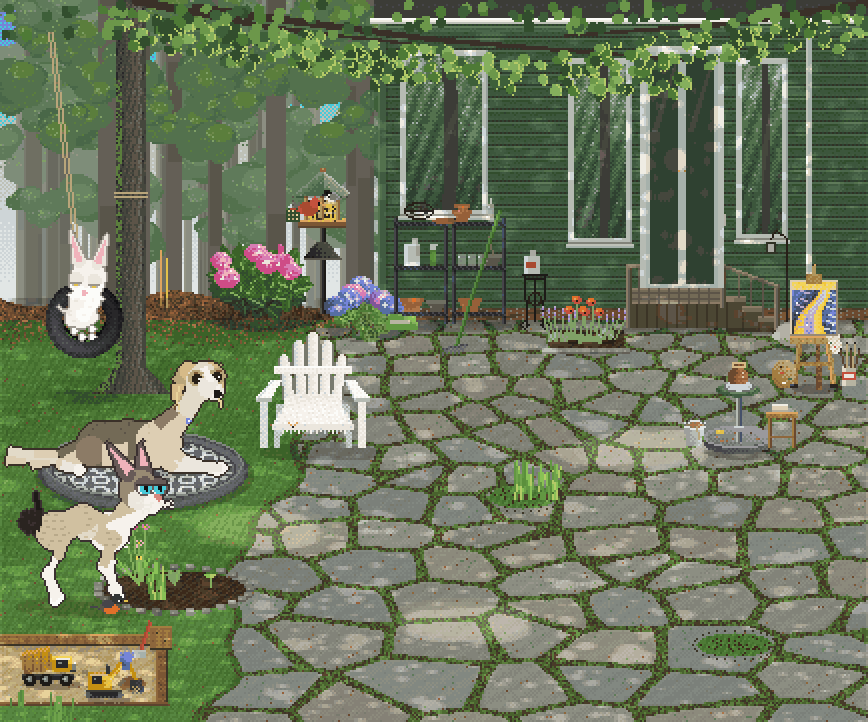
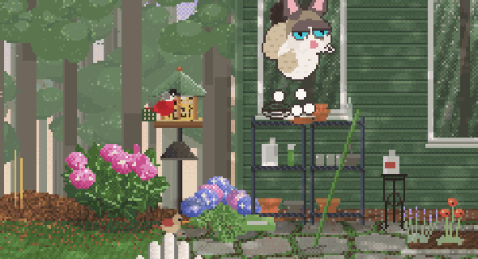
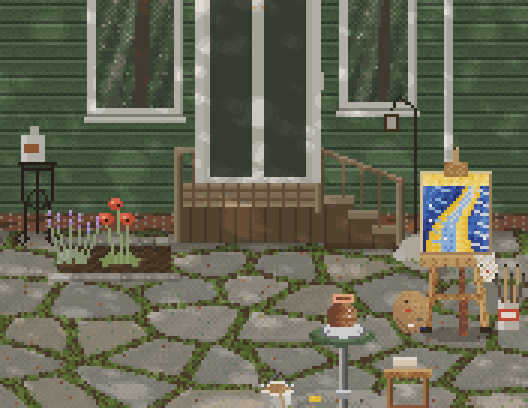
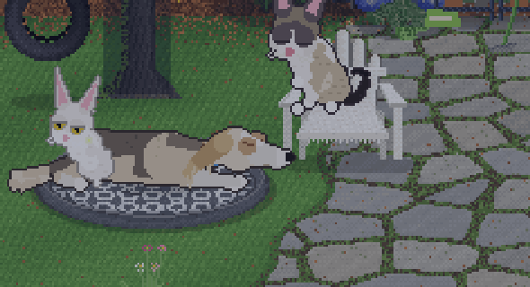
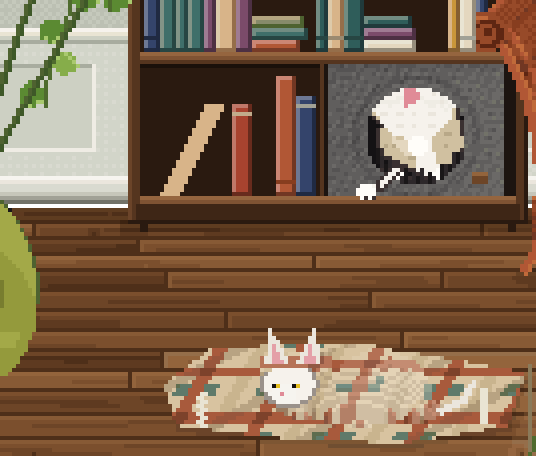
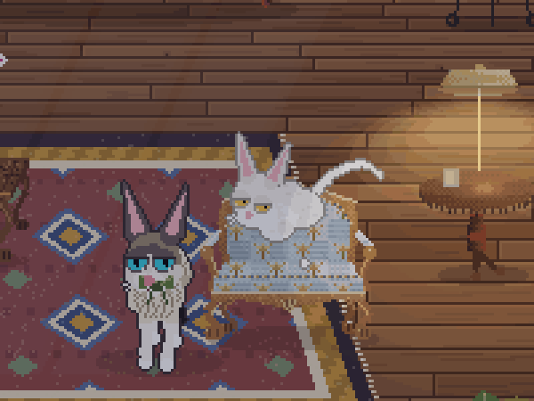
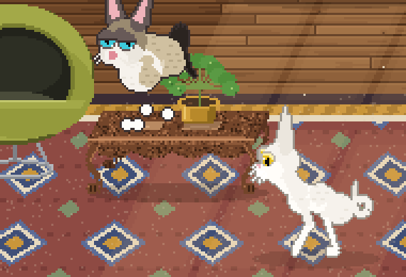
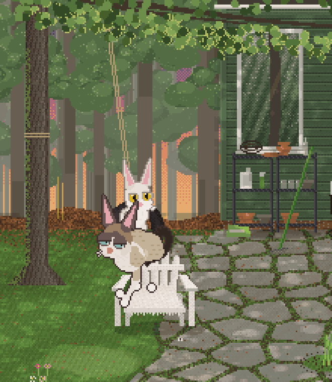
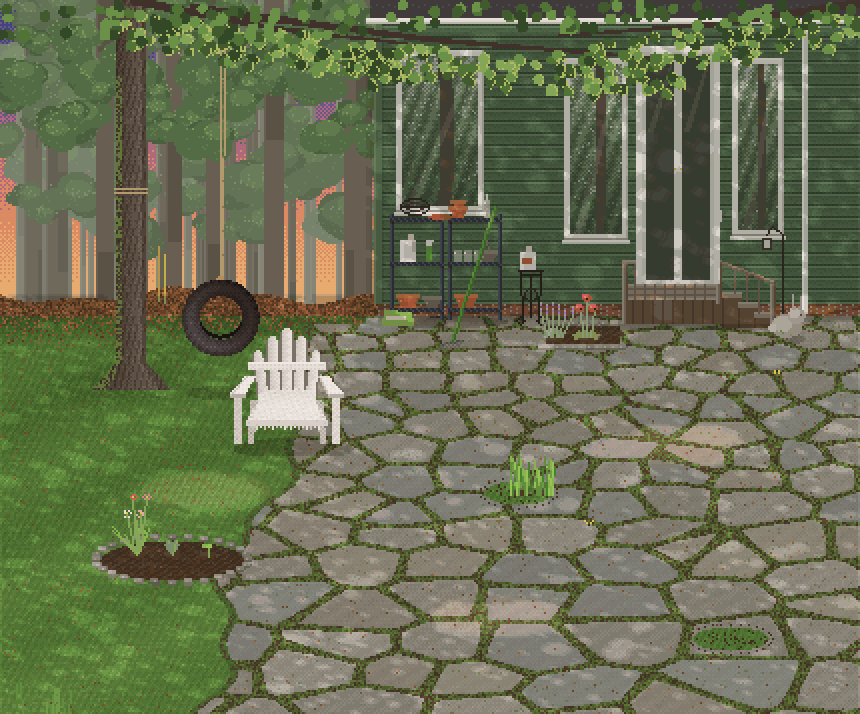
DAppendix: document history
| Version | Date | Change |
|---|---|---|
| 1.1 | 2026-10-20 | Rewritten as a neutral, class-structured document: ontology (§2), affordance taxonomy (§4.1), verb table (§6), systems table with status (§7), feature status (§10.2). Win95 chrome removed; the live build, live values and figures kept. |
| 1.0 | 2026-10-20 | First version, Win95 desktop presentation modeled on Mad Money Tycoon. |
docs/gdd/ · the repo's docs/ folder holds the brief, process, protocol, architecture and art-direction documents this one condenses.